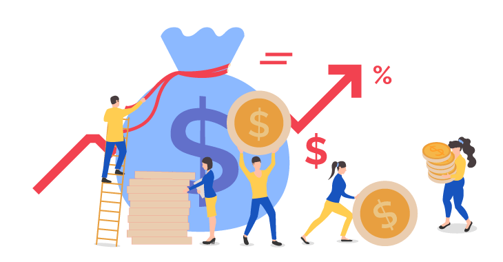

1. Definición y Conceptos
Un CRM (Customer Relationship Management) es un sistema para gestionar relaciones con clientes actuales y potenciales. Va más allá de un software: engloba estrategias, herramientas y técnicas para optimizar cada interacción.
2. ¿Qué hace un CRM?
Un CRM te permite:
- Rastrear y administrar información de clientes.
- Conectar a todo tu equipo en cualquier dispositivo.
- Capturar emails de forma inteligente.
- Simplificar tareas repetitivas.
- Ofrecer recomendaciones personalizadas.
- Escalar y personalizar la experiencia.
3. Importancia y Beneficios
El uso de un CRM incrementa la satisfacción del cliente y la productividad. Beneficios clave:
+37% Retención: Aumenta tus ingresos por ventas.
+45% Satisfacción: Mejora la experiencia de tus clientes.

+43% ROI: Optimiza tus campañas de marketing.